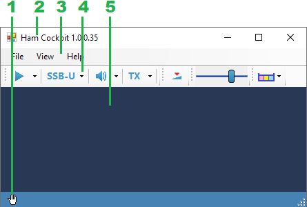

User Interface
The user interface of Ham Cockpit provides the framework that allows the plugins to show their toolstrips, status bar controls and visual panels.

- Status bar. Plugins can add controls to the status bar. In this example, the Conventional Receiver plugin shows an icon that indicates the status of the radio control interface.
- Caption bar. Shows the name and version of the program.
- Main Menu:
- File - click File / Exit to close the program
- View - show or hide visual plugins, edit plugin settings
- Help - access information about the program
- Toolbar. Contains the DSP Pipeline toolstrip and the toolstrips added by the installed plugins. Re-order the toolstrips using drag-and-drop.
- Docking area. Contains Docked visual plugins.